Doğum ve İlk Yıllar
Sami Pehlivan, dönemin Yugoslavya'sına bağlı Makedonya bölgesinde dünyaya geldi. Çocukluğu kırsal Balkan kültürü ve güçlü aile bağları içinde geçti.
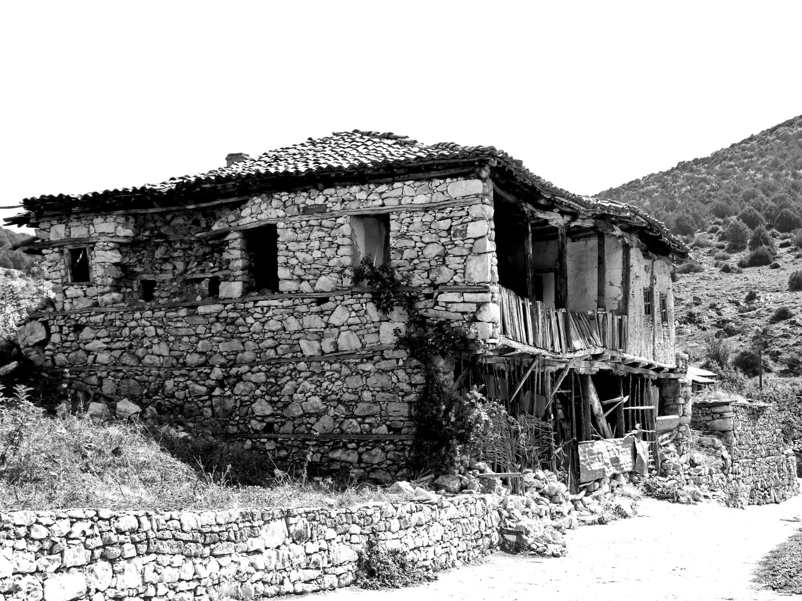
Anı · Emek · Miras
1940 - 2020
Bu sayfa, milli sporcu Sami Pehlivan'ın hayat yolculuğunu ve ondan geriye kalan güreş kültürünü yaşatan aile hikayesini anlatır.
"Sami'den bugüne bize kalan en kıymetli miras; minderde mücadele, evde sevgi ve her nesilde birbirine tutunan bir aile olabilmek."
Balkanlardan Türkiye'ye, oradan Avrupa'ya uzanan bir ömür boyunca Sami Pehlivan'ın güreşle kurduğu bağ, ailesi için bir karakter ve duruş mirasına dönüştü.
Sami Pehlivan, dönemin Yugoslavya'sına bağlı Makedonya bölgesinde dünyaya geldi. Çocukluğu kırsal Balkan kültürü ve güçlü aile bağları içinde geçti.

Üsküp'teki seçmelerde yeteneğini ortaya koydu; köy meydanlarından resmi müsabakalara geçerek spor hayatında yeni bir dönem açtı.
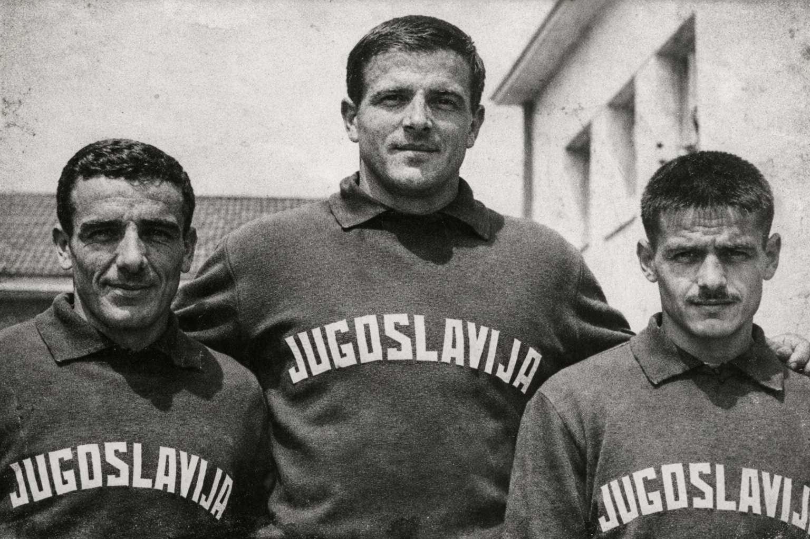
Ailesiyle Türkiye'ye taşındı ve Bayrampaşa'ya yerleşti. Sümerspor çatısı altında disiplinli bir kariyer inşa etti.
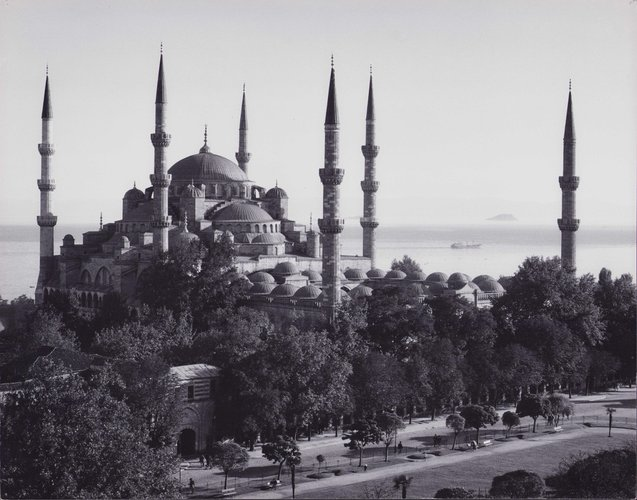
Tunus'ta serbest stil 63 kg kategorisinde altın madalya kazanarak Türk güreş tarihine adını yazdırdı.
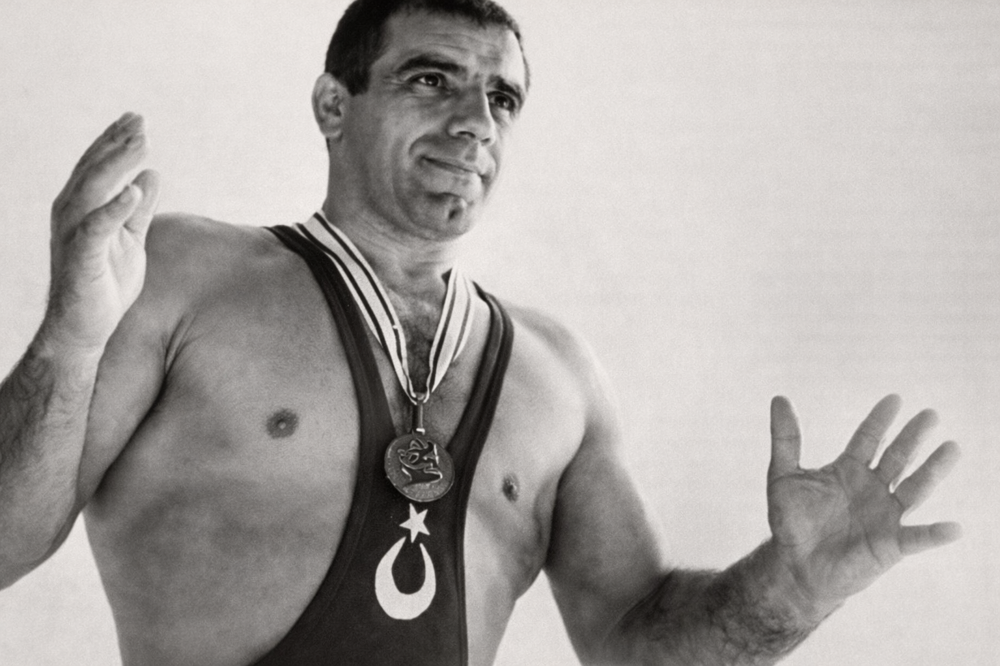
24 Ekim 2020'de aramızdan ayrıldı; arkasında sporla örülmüş güçlü bir karakter ve ilham veren bir aile mirası bıraktı.
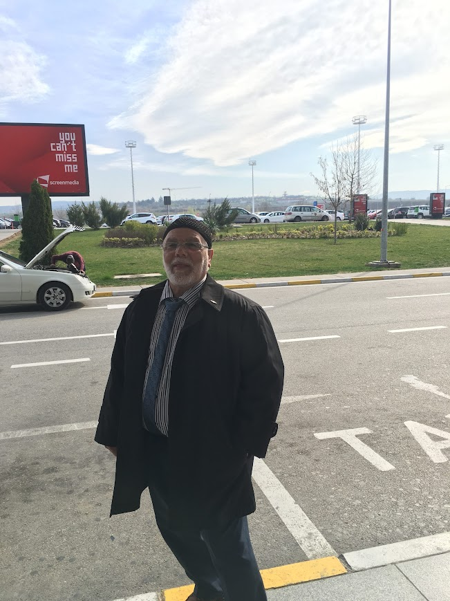
Veda'dan sonra da ailedeki güreş geleneği canlı kaldı: yaşayan eski güreşçi kardeşi Murat Pehlivan, oğlu ve eski güreşçi Ramazan Pehlivan, ayrıca kızından torunu olan aktif güreşçi Yusuf Altıkardeş bu mirası bugün de yaşatıyor.
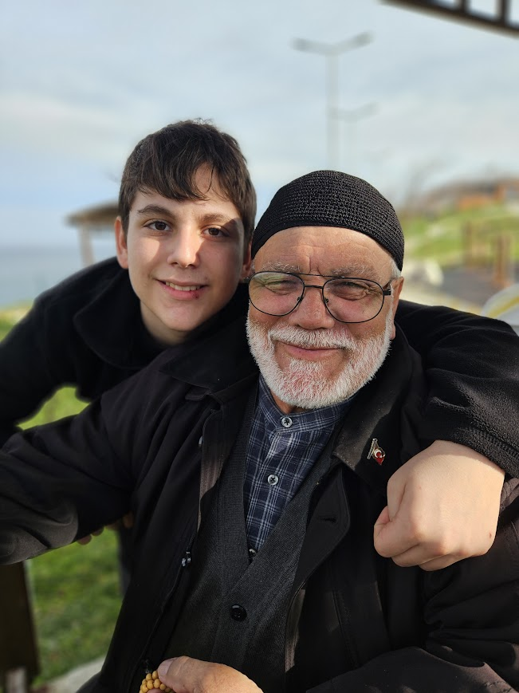
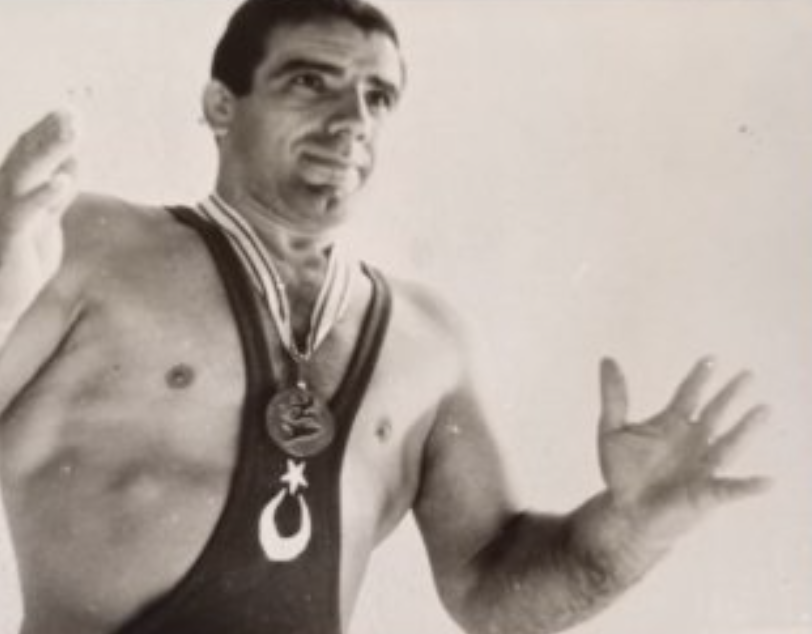
Sami Pehlivan'ın ardından güreş sevgisi, aile bağları ve aynı minder disiplini yaşamaya devam ediyor. Bugün bu çizgide Murat Pehlivan, torunu Yusuf Altıkardeş ve Murat Pehlivan'ın oğlu Ramazan'ın geçmişteki madalyalı güreş hikayesi aynı mirasın farklı halkaları olarak anılıyor.
Bu karelerin her biri, Sami Pehlivan'ın aile içinde bıraktığı sıcaklığı ve güreş kültürünün nesilden nesile nasıl taşındığını anlatır.
Yaşayan Aile Büyüğü · Güreş Mirası Taşıyıcısı
Ailede disiplin ve tevazunun temsilcisi olarak, Sami Pehlivan'dan gelen emeği ve spor ahlakını yeni kuşaklara aktarmaya devam ediyor.
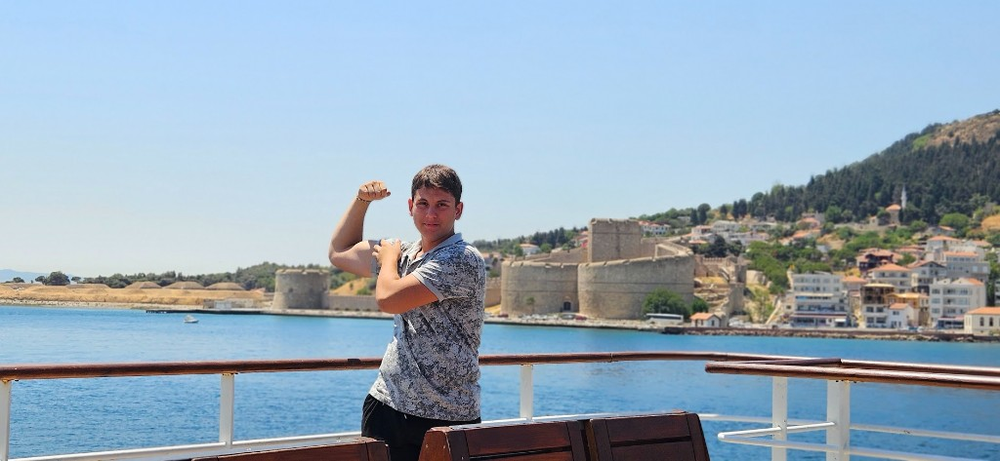
Yeni Nesil Güreşçi
Ailenin genç yüzü olarak hem spor azmini hem de büyüklerinden aldığı aidiyet duygusunu bir arada taşıyor.
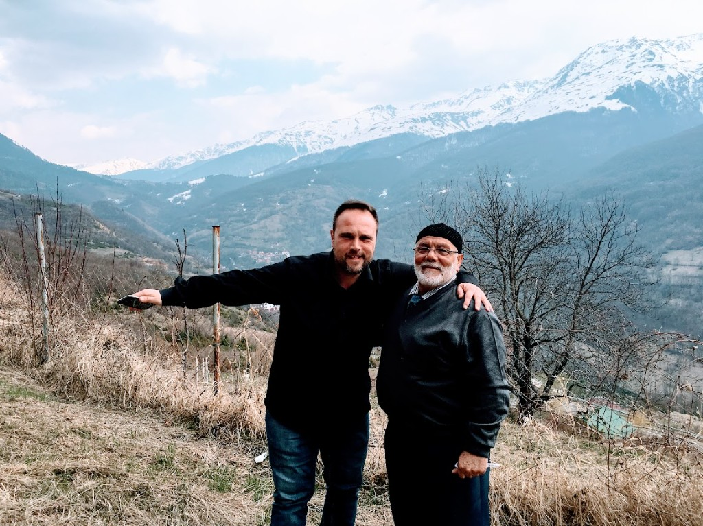
Eski Güreşçi · Madalyalı Dönem
Ramazan, Almanya'da kaldığı yıllarda aktif olarak güreş yaptı ve çeşitli madalyalar kazandı; bu emek ailedeki mücadele geleneğini bir kuşak daha güçlendirdi.

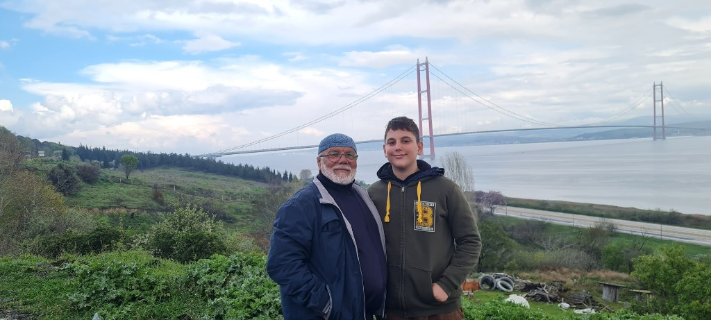
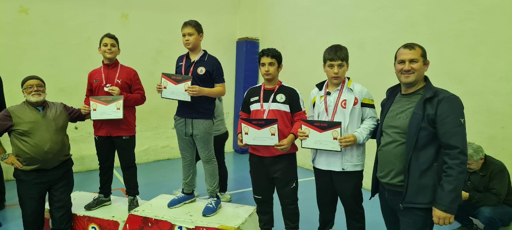
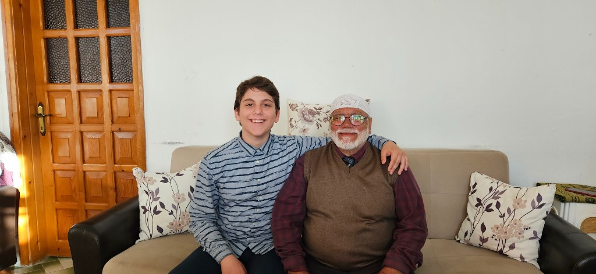
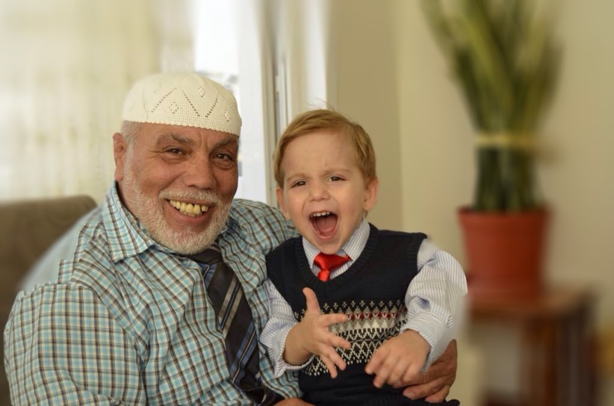
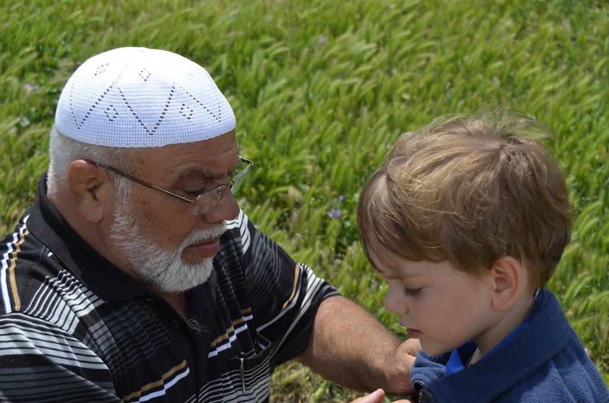
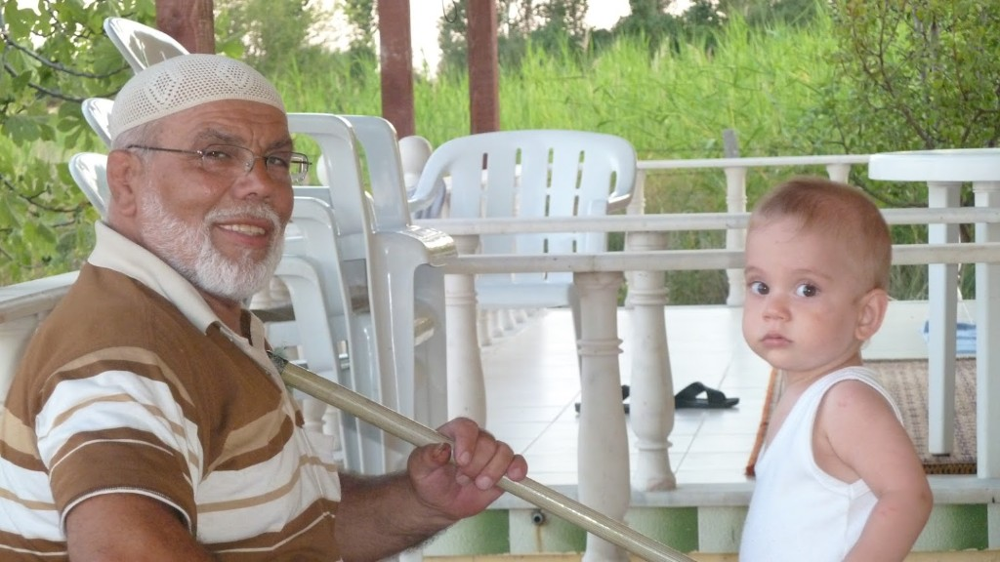
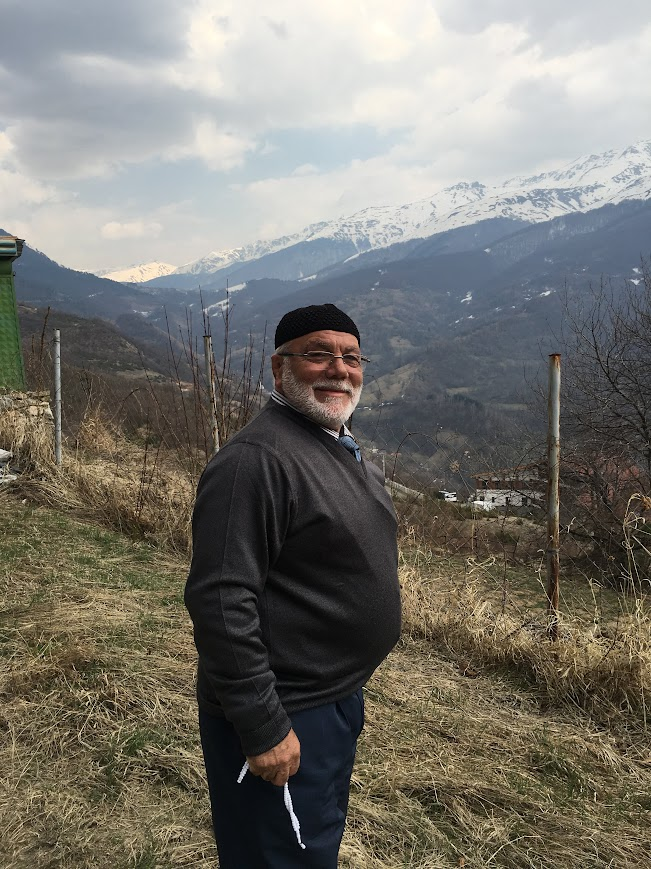
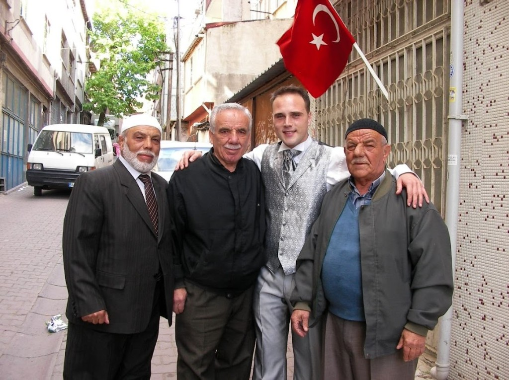